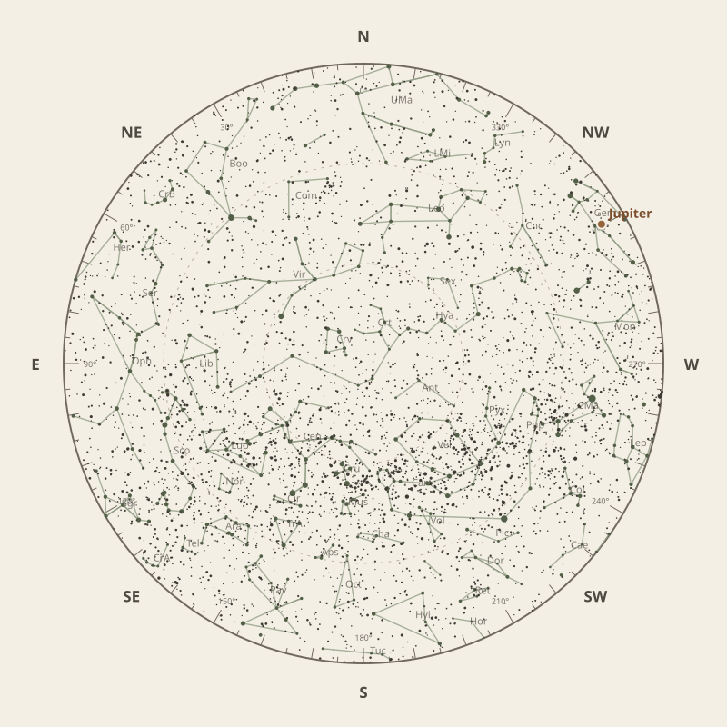

← Annual almanac


North is at the top; east is at the left. Solar System objects shown are above the horizon at 10 pm.
Monthly field almanac
April 2026
Galactic Centre viewing is best on 16 Apr 2026, from 10:35 pm to 5:40 am, reaching 89°.
- New Moon
- 18 Apr Darkest skies
- Full Moon
- 2 Apr Brightest skies
- Best dark window
- 21 Apr 11h 52m
Current conditions
Checking the sky near South East Queensland, Australia…
Sky chart: 15 Apr 2026, 10 pm
South East Queensland, Australia local time.
Show static monthly chart

Night planner
Choose a date to see astronomical darkness, Moon interference, Galactic Centre visibility, and planet altitudes and times.
Best low-Moon dark periods this month
- 5:50 pm–5:42 am11h 52m · 19% Moon
- 5:51 pm–5:42 am11h 51m · 11% Moon
- 5:52 pm–5:41 am11h 49m · 5% Moon


Galactic Centre sessions
- 10:13 pm–5:43 am7h 30m · core to 89°
- 10:20 pm–5:42 am7h 22m · core to 88°
- 10:21 pm–5:42 am7h 21m · core to 89°
Events
- HIP 59532 lunar occultation7:55 pm to 9:08 pm; Moon at 35° altitude for the first listed contact.
- HIP 63225 lunar occultation7:32 pm to 8:40 pm; Moon at 24° altitude for the first listed contact.
- Comet 34D47° altitude; magnitude 16.8.
April highlights
- Occultations
HIP 59423 lunar occultation
7:05 pm to 7:52 pm; Moon at 24° altitude for the first listed contact.
- Planetary events
Mercury greatest western elongation
Morning sky; 27.8° from the Sun.
- Comets
Comet 29P
65° altitude; magnitude 17.4.
- Minor planets
15 Eunomia
77° altitude; magnitude 10.0.
- Milky Way
Milky Way core window
7h 05m with 89° altitude.


Moon phases
98%
76%
14%
29%
92%
For faint deep-sky objects, observe when the Moon is below the horizon or weakly illuminated. For lunar relief, observe near the terminator; full Moon is best suited to ray systems and albedo features.
Download Moon phase CSV →

Planet visibility
Evening
- Jupiter6 Apr · 6:00 pm40° · Good
- Uranus2 Apr · 6:00 pm24° · Fair
- Venus2 Apr · 6:00 pm9° · Poor
 Jupiter
Jupiter Uranus
Uranus Venus
VenusPredawn
- Neptune30 Apr · 5:30 am26° · Good
- Mercury2 Apr · 5:30 am21° · Fair
- Saturn30 Apr · 5:30 am20° · Fair
- Mars30 Apr · 5:30 am14° · Poor
 Neptune
Neptune Mercury
Mercury Saturn
Saturn Mars
Mars